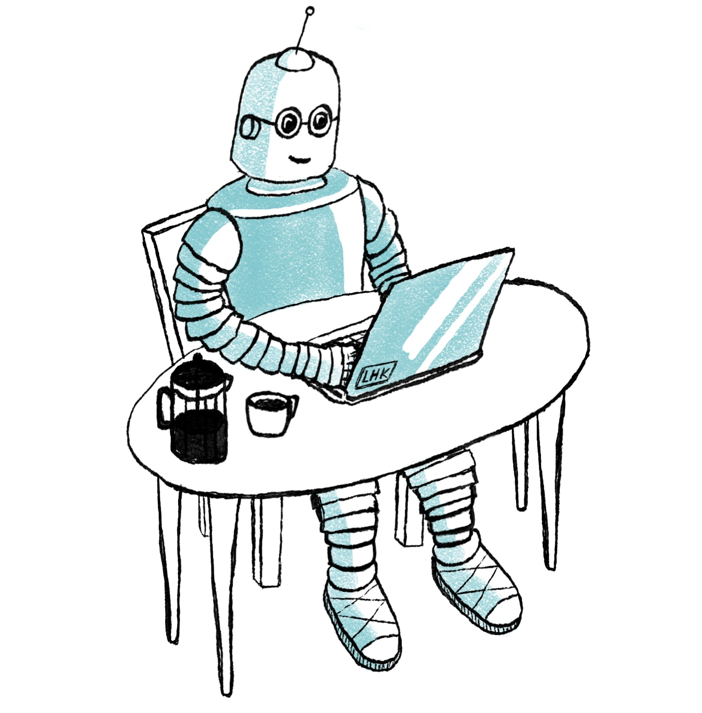

The Automatic Computer Scientist

About
Publications
Journals
Learning programs with magic values
C. Hocquette and A. Cropper
Machine learning 2022
Inductive logic programming at 30: a new introduction
A. Cropper and S. Dumančić.
JAIR 2022
Inductive logic programming at 30
A. Cropper, S. Dumančić, R. Evans, and S.H. Muggleton
Machine learning 2022
Conferences
Relational program synthesis with numerical reasoning
C. Hocquette and A. Cropper
AAAI 2023
Learning logic programs by discovering where not to search
A. Cropper and C. Hocquette
AAAI 2023
Learning logic programs through divide, constrain, and conquer
A. Cropper
AAAI 2022